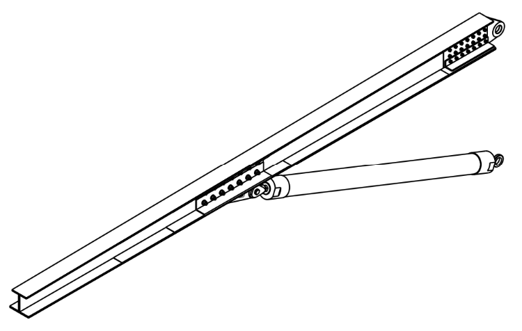
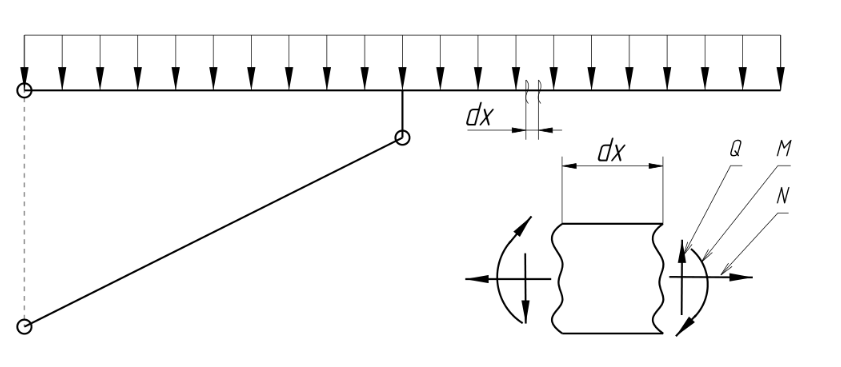
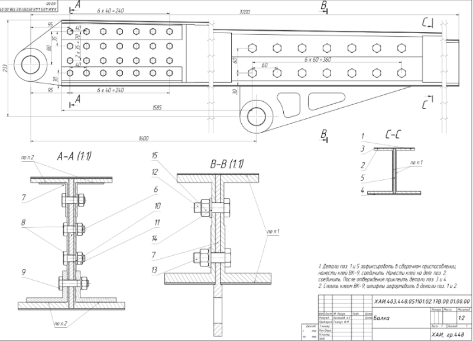
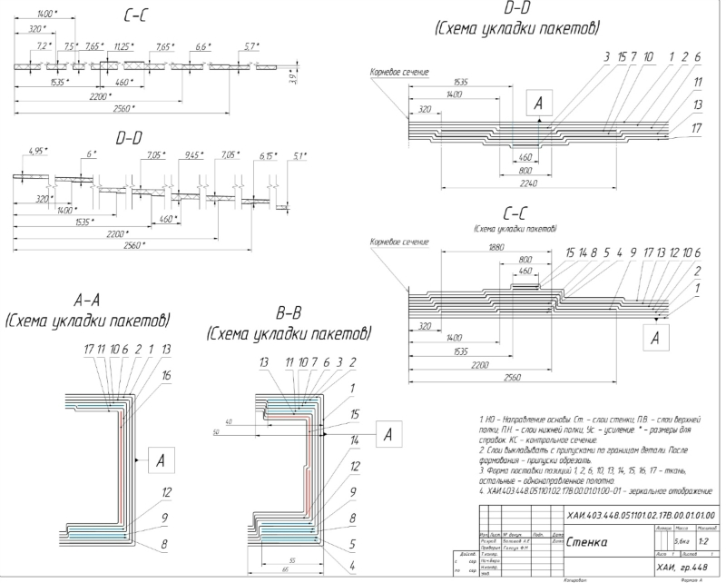
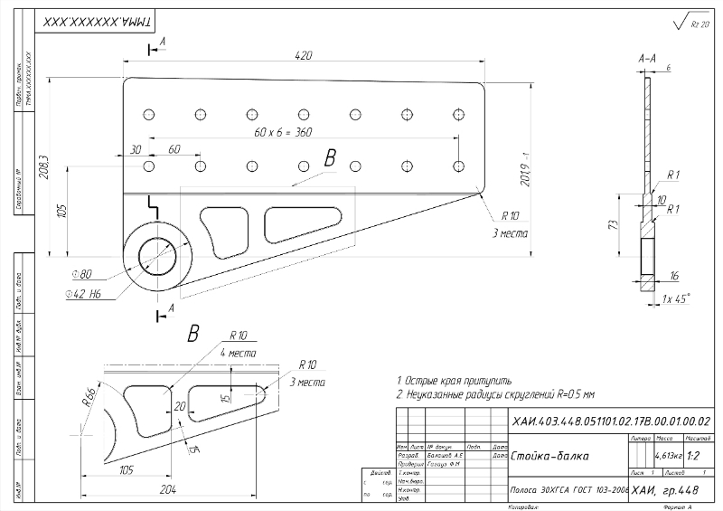

Design composite carbon beam with fiber-glass strut and articulator connectors.

Beam has been designed to bearable irregularly distributed load from 75 kN at the assembly unit to -60 kN at the end.
| Part | Type | Material |
|---|---|---|
| Shelfs | Carbon fiber | IM6, 65% |
| Side | Carbon cloth | 6GfH, 58% |
| Srtut | Fibrf-glass | E-glass, 60% |
In this work beam profile has form of I-section (or turned H-section). This kind of profile provides a good enough access to assembly units, fasts and also simple at manufacture. Moreover, with symmetrical about load plane (plane, in which the loads acting) absent necessity of founding flexural center.
According to analytical model of beam, in each section of beam there are acting generalize forces - transverse force, bending moment and normal force.

This generalize forces - also called internal forces - are depended of the actual, real forcer - also called external - pressure in this cases. Because the pressure distribution is linear but non-constant, so internal forces also will have non-constant distribution across the beam. Moreover, because the mathematical definition of IF is integrated, their distribution will nonlinear.
After IF definition, there is needed to build a graphical distribution of them. This is necessary to survey character of their distribution. In which point one force is stretch beam fiber and another is compress, and in which vice versa.
For this work were made whole package of technical documentation, or engineering data. Here are some example of drawings. Drawings, by the way, were maid exactly from 3D models, which also were maid in cad system CATIA V5.
There how is looking only beam with assembly units: 
Composite laying scheme of beam looks like: 
Steel-made fitting - first connection unit: 
Strut was made by spooling fiber-glass and gluing assembly units:
Attachment fitting, which connect beam with strut made from 30ChGSA Steel and with the use of the Topology optimization.
The manufacture technique for this beam is following: